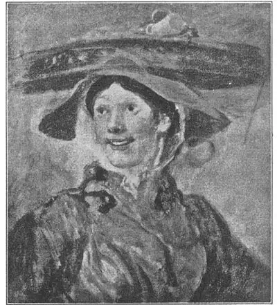
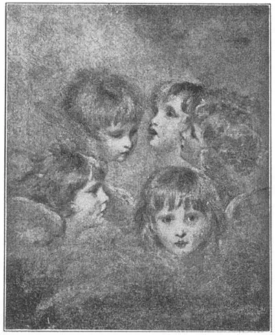
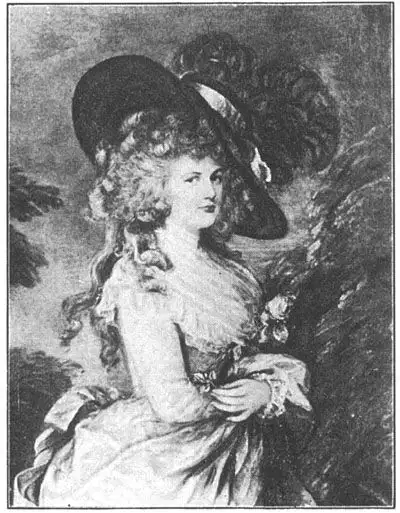
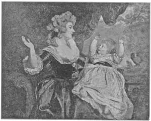

23
A LATE START
后来居上

DO YOU know what an international picture show is? It is a group of pictures brought together from different countries so that people can see how much alike and how different the paintings are.
Let’s suppose all the great countries in Europe had decided to have an international picture show in 1700 A.D. We shall have to call it a make-believe show because the various countries never thought of such a thing in those days. So let’s make our own rules.
We’ll say it’s 1700. Each country can send only one picture and the best will get a prize.
Now let’s say that all the pictures have arrived:
A Titian from Venice
A Michelangelo from Rome
A Velasquez from Spain
A Rubens from Flanders
A Rembrandt from the Netherlands
A Dürer from Germany
A Poussin from France
But where is England’s picture? Every important country except England has sent a famous painting. Now, England is one of the greatest countries in this year 1700, but all we get from England is a letter saying that she is very sorry but she can’t send us a picture by a 110 famous English artist because she hasn’t had any famous artists. What! One of the greatest countries in Europe—perhaps the greatest—has no Painters? Well, what a disappointment that is for our show! But—
Though England had had no famous painters by 1700, she soon made up for lost time. Her first famous artist was three years old in 1700. His name was Hogarth. And after Hogarth came many more artists. If we had held our make-believe international picture show in 1800, England would have had plenty of paintings to choose from.
Hogarth began as an engraver of silver. Then he learned to engrave on copper and make prints from his copper plates. These prints were very popular and he sold enough of them to make a good living. But all the time he wanted to be a painter. So he painted pictures, but he was so well-known as a print maker that very few people considered him a great painter. They preferred his prints and engravings. He found that he could make engravings of his paintings and sell the prints much more readily than the paintings themselves. Nowadays we think of him as a great painter—the first great English painter.
Probably all boys and girls like to read the funny papers. A newspaper comic strip is generally very poorly drawn. You could hardly call it art. And yet Hogarth, in some of his paintings, used the same idea as the funny papers. He used to make a series of six or eight pictures about the same people, showing what happened to them from time to time. Only instead of being simply funny, Hogarth’s pictures were meant to show how bad certain things were in England at that time. They were often humorous, as well. That kind of humor we call satire.
Hogarth printed one series of pictures about a man who was trying to be elected to Parliament. One picture shows the man making a speech. Another shows him hiring men with clubs to make the people vote for him, another shows him bribing voters— that is, paying them to vote for him. Each of the pictures is a good painting by itself, but the whole series was supposed to be seen together, like the different A LATE START 111 pictures in a comic strip. And these pictures made a great impression on the Englishmen of Hogarth’s time. Perhaps they did help make things better as Hogarth hoped they would. Nowadays elections are certainly run as fairly in England as anywhere in the world.

No.23-1 THE SHRIMP GIRL（《卖虾女》） HOGARTH（贺加斯 作）
Courtesy of The University Prints
Hogarth painted portraits too. He painted a portrait of himself with his little dog. He painted this picture of “The Shrimp Girl.” Nowa-days we buy shrimps in a store or at the market, but in London in Hogarth’s time people bought shrimps from girls who carried the shrimps around in a basket on their heads.
Hogarth has caught the shrimp girl’s smile as Hals caught the smiles in the portraits he painted—with quick, sure strokes of the brush. If you put this painting side by side with Dürer’s portrait of his father, it looks unfinished. And yet it tells you as much about the real shrimp girl as Diirer’s picture tells you about his father. I like it that way. Do you?
About the middle of the eighteenth century, while Hogarth was still painting, two other Englishmen were rising to fame as great painters. One was Sir Joshua Reynolds, the other Thomas Gainsborough. Both were best known as portrait painters. Sir Joshua Reynolds was a few years older than Thomas Gainsborough, and so I’ll tell yon about him first.
I’ll begin this story with an African pirate. But please don’t get excited. There isn’t a pirate fight in the story, much as I know you’d like to hear one. The pirate was a kind of Arab king who was holding up ships in the Mediterranean. The British were sending a captain with a squadron of ships to talk things over with the pirate.
Now, this captain was a friend of Reynolds and invited him to come along on his warship. Reynolds accepted the invitation and when he got to Italy he stayed there, to study the great paintings of Michelangelo, Titian, Correggio, and Raphael. He liked Michelangelo best. He liked Michelangelo so much he became deaf! That sounds strange, but it is true. Reynolds was working in the Sistine Chapel, studying Michelangelo’s paintings. He was sitting in a draft, but was so interested in the pictures he didn’t even notice the draft. Not till he got up to go did he notice that anything was wrong. But after that he began to grow deaf, and soon he had to use an ear trumpet.

No.23-2 ANGEL HEADS （《天使头像》）REYNOLDS （雷诺兹 作）
Courtesy of The University Print
Reynolds went back to London and became the favorite portrait painter of the city. There were no cameras in those days, and so no one could have a photograph taken. Instead, people went to an artist and had their portraits painted. Poor people could not afford portraits by so expensive a painter as Reynolds, and so most of his portraits are of lords and ladies and their children. The king knighted him. Then he was Sir Joshua Reynolds.
Sir Joshua worked hard and tried to make every picture he painted better than the one before. He was especially good at painting women and children. Have you ever heard of pictures called “The Strawberry Girl,” “Master Hare,” “The Age of Innocence,” and “The Duchess of Devonshire and Her Daughter”? These are some of Reynolds’s best known portraits.
Unfortunately Reynolds was always trying out new kinds of paints and oils, so that many of his pictures have become faded or cracked. Some even faded soon after he painted them. But this didn’t make him less popular. A friend of his said, “A faded portrait by Reynolds is better than a fresh one by anybody else.”
This picture of five little angel heads by Sir Joshua Reynolds shows five different views of the same little girl.
The other portrait painter, Thomas Gainsborough, liked best to paint landscapes. He couldn’t sell the landscapes, however, and so he continued to paint portraits all his life. And very fine paintings they are. He made the people he painted look so graceful and charming in their portraits that he was in great demand. Gainsborough’s colors are not so rich and glowing as Reynolds’s—they are more silvery and gray.

No.23-3 THE DUCHESS OF DEVONSHIRE（《德文郡公爵夫人》）
GAINSBOROUGH（庚斯博罗 作）
One of Gainsborough’s paintings that has become world famous as “The Blue Boy” is thought to have been painted because Reynolds had said a picture with much blue in it could not be beautiful. So Gainsborough painted “The Blue Boy” to prove Reynolds was wrong. Gainsborough didn’t seem to like Reynolds, for some reason, and was always as rude to him as could be. Perhaps he was jealous of the other painter. But before Gainsborough died he asked Reynolds to forgive his rudeness and told him how much he admired him and his work.
Gainsborough painted portraits of many of the same people that Reynolds did. They both, for example, painted the Duchess of Devonshire and Mrs. Siddons. Which of the portraits of these two ladies is better it would be hard to say. Here is Gainsborough’s famous portrait of the duchess. What a big hat she has!
And here is Reynold’s portrait of the same duchess with her daughter.

No.23-4 THE DUCHESS OF DEVONSHIRE AND HER DAUGHTER
（《德文郡公爵夫人和她的女儿》） REYNOLDS（雷诺兹 作）
Gainsborough’s landscapes are more admired than they were when he was alive. Though they are not so well-known as his portraits, they will help us to think of him as an excellent British painter.
【中文阅读】
你知道什么是国际画展吗？国际画展就是把来自不同的国家的绘画作品集中起来，让人们比较它们的相似之处和不同之处。
我们可以假设欧洲所有的大国曾经决定在1700年共同举办一个国际画展。我们只能说那是一个虚拟的展览，因为那时候各个国家都没这么想过。还是让我们自己来制定一些规则看看。
我们假定那是1700年。每个国家只能寄一幅画来，最好的画会获奖。
现在，让我们假设所有的画都到齐了：
威尼斯送来了提香的画
罗马送来了米开朗基罗的画
西班牙送来了委拉斯开兹的画
佛兰德斯送来了鲁本斯的画
荷兰送来了伦勃朗的画
德国送来了丢勒的画
法国送来了普桑的画
但是，英国的画在哪里呢？除了英国，其他每个重要的国家都寄来了一幅名画。英国在1700年那个年代是世界上最大的国家之一，但我们收到的只是一封道歉信。英国没能寄一幅名画家的画来，因为英国根本就没有任何名画家。什么？欧洲的大国之一——或许是最大的国家——居然没有画家？啊，这对我们的画展来说该是多大的遗憾呀！
不过，尽管英国到1700年还没有一位名画家，但它很快就赶上来了。1700年，英国第一位名画家才3岁。他叫贺加斯。而贺加斯之后就有更多的画家出现了。假如我们在1800年举办那个虚构的国际画展的话，那么英国肯定就有许多绘画作品可供选择了。
起初贺加斯从事银器雕刻。后来，他又学习铜器雕刻，并把雕刻出的图画印出来。这些印品很受欢迎，销路畅通，足够让他过上好日子。但是，贺加斯一直都想成为一名画家，因此他开始画画。可他一直是以印刷匠出名，所以几乎没人把他看作绘画大师。人们更喜欢他的印刷品和雕刻。贺加斯发现，他可以把自己的绘画雕刻出来，然后卖出印刷品，没想到这比绘画本身好卖多了。我们今天把他当做大画家来看——英国的第一位大画家。
可能所有的男孩和女孩都喜欢看连环画。不过报纸上的连环漫画通常都画得很拙劣，简直不能称之为艺术。然而贺加斯有时在绘画时也采用了连环画相同的创意。他 经常给同一群人一连画七八张画，以此来展示他们的一系列动作。不过，贺加斯的画并不仅仅只为逗乐，它们还揭露了当时英国社会一些丑陋的事情。这些画通常也是幽默的。我们把这种幽默叫做讽刺。
贺加斯给一个正在准备竞选议员的人画了一组系列画。其中一张画的是这个人正在发表演讲；另一张画的是他雇了一群人拿着木棍，强迫人们给他投票；还有一张画的则是他在贿赂投票人，也就是，他付钱让人们给他投票。每张画都画得很好，不过这系列组画应该放在一起看，就像连环画里不同的图画那样。这些画给当时的英国人留下了非常深刻的印象，或许这些画真的就像贺加斯希望的那样的确对事情的改善起到了帮助。今天，英国也像世界其他地方一样进行着公正的选举。
贺加斯也画肖像画。他给自己和他的小狗画了一幅画。他还画了这幅《卖虾女》（图23-1）。今天我们一般都到商店或者菜场买虾，但在贺加斯那个时代，伦敦人都是从卖虾女那里买虾的。这些卖虾女把虾放在自己头顶上的篮子里。
贺加斯捕捉到卖虾女的一个笑容，干净利落的几笔迅速画下，就像哈尔斯捕捉人物的笑容一样。如果你把这幅画和丢勒为他父亲画的肖像画放在一块来看的话，这幅画似乎还没有画完。但是，它让我们对卖虾女有了真正的认识，就像丢勒为他父亲画的肖像画所告诉我们的一样。我喜欢贺加斯的这种表现手法。你呢？
大约在18世纪中期，那时贺加斯还在画画，另外两个英国人正名声大振，成了大画家。一位是约书亚·雷诺兹爵士，另一位是托马斯·庚斯博罗。他们俩都是以肖像画著称。约书亚·雷诺兹爵士要比庚斯博罗大几岁，所以我就先介绍雷诺兹吧。
在介绍前，我先讲一个非洲海盗的故事。不过请别激动。据我所知，这里面并没有好听的有关海盗大战的故事。这个海盗是一个阿拉伯国王，专门在地中海地区拦劫过往的船只。英国派了一位船长带领一批舰队去同这个海盗进行谈判。
船长是雷诺兹的朋友，所以他就邀请雷诺兹同他一起乘战舰出海。雷诺兹接受了邀请。当他到达意大利后，他便留在那里研究学习意大利著名画家米开朗基罗、提香、科雷吉欧和拉斐尔的作品。雷诺兹最喜欢米开朗基罗。他是如此喜欢米开朗基罗，以至于最后变成了一个聋子！这听起来很奇怪，但的的确确是真的。有一次，雷诺兹正在西斯廷教堂研究米开朗基罗的绘画作品。他正好坐在一个通风口旁。但是，他对米开朗基罗的绘画作品实在太感兴趣了，所以根本没注意到那个通风口。直到最后他起身准备要走的时候，才发现有点不对劲。但从那以后他的耳朵就越来越聋，没多久就不得不戴上了助听器。
雷诺兹后来回到伦敦，成为伦敦城最受喜爱的肖像画家。那时候还没有相机，所以就没有人能拍照。人们只有请画家为他们画像。穷人当然请不起像雷诺兹这样画酬很高的画家，所以雷诺兹的肖像画大多画的是王公贵族及其子女。国王授予他爵位，于是他就成了约书亚·雷诺兹爵士。
约书亚爵士辛勤地工作，试图将每幅画都画得比前一幅更好。他尤其擅长画妇女和小孩。你有没有听说过《草莓姑娘》、《海雷少爷》、《纯真年代》以及《德文郡公爵夫人和她的女儿》这些画呢？这些都是雷诺兹最为著名的肖像画。
不幸的是，雷诺兹总是尝试新的颜料和油彩，所以他的许多画都褪色或变形了。有些画甚至刚画好没多久就褪色了。不过这并没有减少他受欢迎的程度。他的一个朋友说：“雷诺兹的画即使褪了色，也强过其他人刚画好的画。”
雷诺兹在图23-2这幅画中画了五个小天使般的头像，展示了一个小女孩五个不同的侧面。
另一位肖像画家托马斯·庚斯博罗最爱画风景。可他的风景画却卖不出去，所以他只好继续画肖像，一画就是一生。这些肖像画都画得很好。他肖像画中的人物看起来十分优雅迷人，所以就有许多人请他画像。庚斯博罗的肖像画色彩不像雷诺兹的那样丰富绚丽，他的色彩更多是银灰色。
庚斯博罗有幅画世界闻名。此画名叫《蓝衣少年》。据说，庚斯博罗之所以画这幅画是因为雷诺兹曾说过，一幅画偏重蓝色肯定不好看。于是，庚斯博罗想通过画这幅画来证明雷诺兹的说法不正确。可能由于某种原因，庚斯博罗似乎不太喜欢雷诺兹，所以他总是对雷诺兹很粗鲁。也许是出于嫉妒的原因吧。不过他在临死前，请求雷诺兹原谅他的粗鲁态度，还说他其实是非常欣赏雷诺兹和他的作品的。
庚斯博罗与雷诺兹给许多相同的人画过肖像画。比如，他们俩都给德文郡公爵夫人和西斯登夫人画过肖像。至于他们俩谁画得更好，这真的很难说。这里有一幅是庚斯博罗给德文郡公爵夫人画的著名肖像画（图23-3）。她戴的帽子可真大呀！
图23-4是雷诺兹给德文郡公爵夫人和她女儿画的肖像画。
如今，庚斯博罗的风景画要比他在世时更受人们欢迎。尽管他的风景画没有他的肖像画那么出名，但是，这些风景画将有助于我们认识到，庚斯博罗的确是一位非常出色的英国画家。